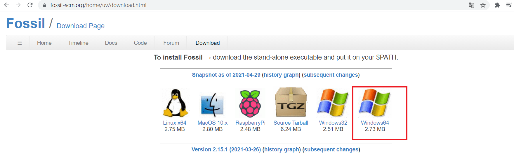
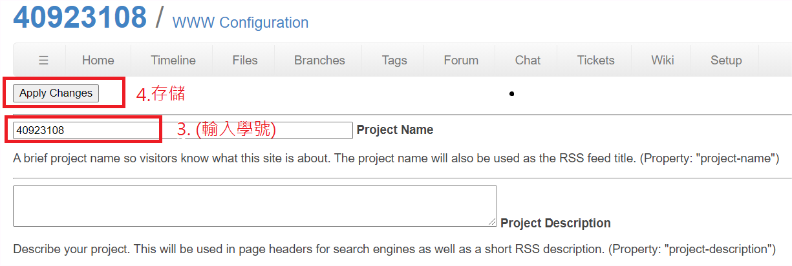

W3 <<
Previous Next >> SSH設定
WCM倉儲
搜尋 fossil scm 接著 Download

注意：須將此檔案存在y槽
建立一個資料夾為 fossil
接這輸入: fossil clone https://學號@fossil.kmol.info/u/學號 學號.fossil
y槽/tmp/fossil 會出現 學號.fossil
需要再建立一個wd的資料夾
在wd底下再建立一個自己學號的資料夾
為了開啟檔案輸入：fossil open ./../../學號.fossil
是為了跟遠端連接有一個壓縮檔案紀錄版本
y槽/tmp/fossil/wd/學號資料夾 會出現_FOSSIL_
註：出現<unnamed>原因是沒在WCM測試倉儲中更改名稱


接著在wd的目錄下clone github帳號
輸入指令：git clone --recurse-submodules https://github.com/學號/倉儲名稱.git
接著把整個wcm2021內的資料全部複製到學號資料夾內
注意：須注意是否有重疊檔案，避免被覆改掉
為了新增所有資料
cd 學號
fossil add .
註：假如中間改版有刪除檔案或目錄，需改成 fossil addremove
fossil add . 是沒有刪除資料所需要打的
fossil commit -m "initial add" 提交資料
a 為全部推送
完成同步
W3 <<
Previous Next >> SSH設定